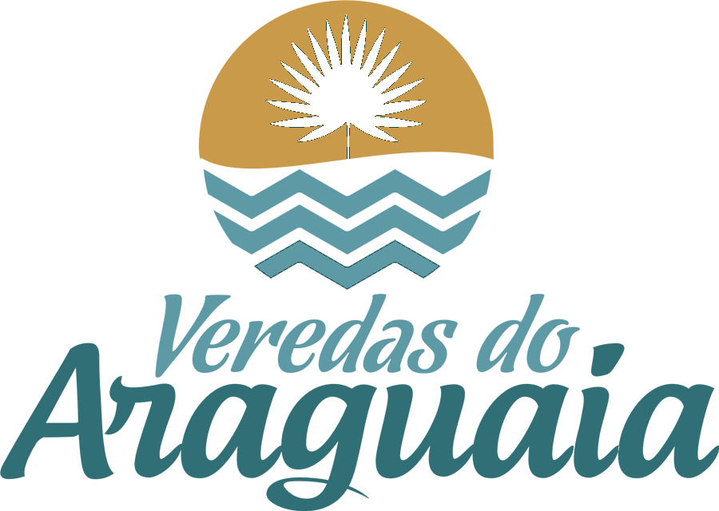
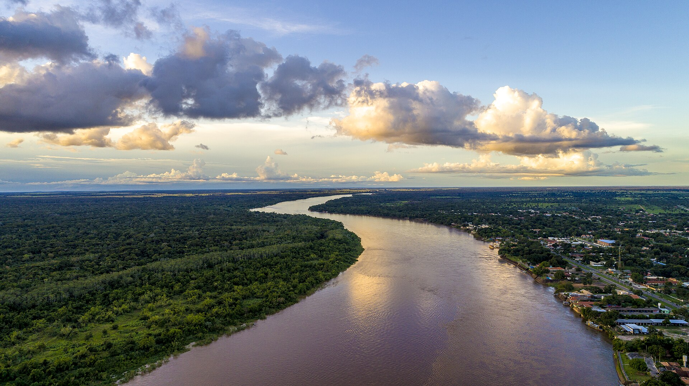
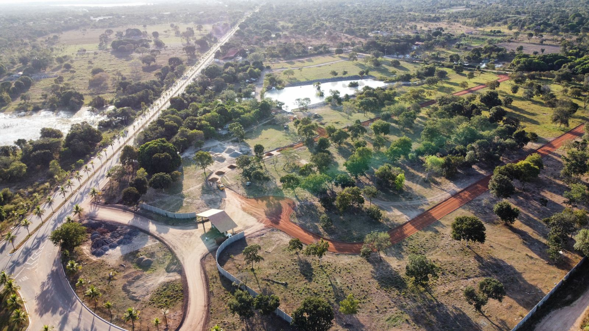
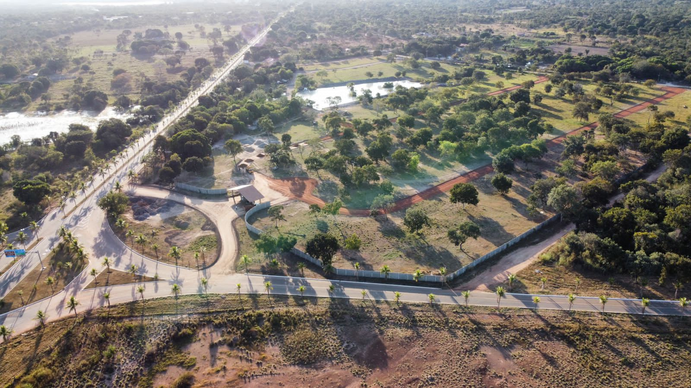
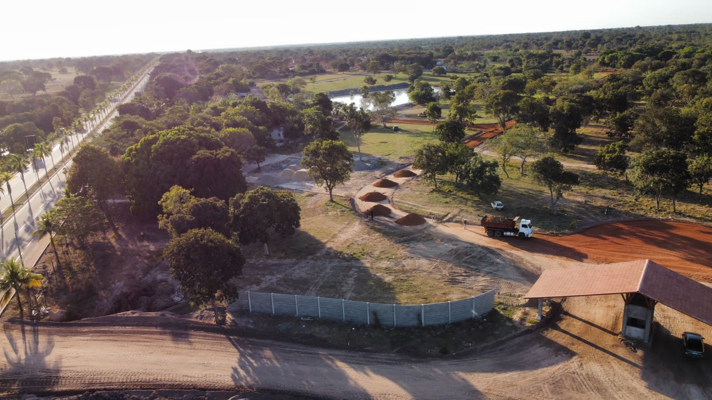
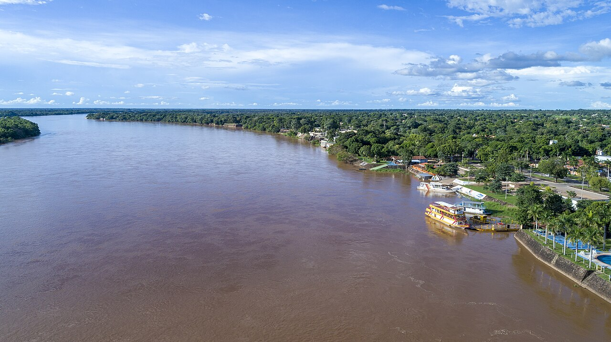

Base pronta
- Asfalto
- Drenagem
- Parte da rede elétrica
- Portaria
- Áreas esportivas

Veredas do Araguaia Aruanã, GoiásInspirado pelo Rio Araguaia
Um condomínio de lotes para viver o ritmo das águas, da vegetação e dos fins de tarde que fazem de Aruanã um destino raro em Goiás.
O Veredas do Araguaia foi pensado para famílias, investidores e compradores de segunda residência que buscam um condomínio fechado com vocação de lazer, segurança e contato com a natureza.
Em fase avançada de implantação, o projeto combina infraestrutura urbana, áreas de convivência e uma proposta de valorização baseada em qualidade, localização e experiência.

Posicionamento
A comunicação do Veredas do Araguaia prioriza percepção de valor: natureza, segurança, lazer familiar, infraestrutura e escassez. Por isso, as condições comerciais são apresentadas sob consulta, com atendimento consultivo pelo WhatsApp.
Consultar disponibilidadeAs imagens mostram etapas iniciais da implantação, com abertura de vias, portaria, cercamento, movimentação de terra e preservação da vegetação existente no terreno.



Os registros em vídeo ajudam a mostrar o empreendimento como ele é: obras acontecendo, água presente, paisagem ao entardecer e o lago interno já revelando vida.
O lago interno reforça a proposta de lazer, contemplação e contato com a natureza dentro do próprio empreendimento.
Registro da infraestrutura avançando para dar suporte aos lotes e às áreas comuns.
Um recorte mais sensorial do empreendimento, com atmosfera de descanso e permanência.
Detalhe vivo que fortalece a narrativa de natureza real, não apenas paisagismo.
Mais um registro para compor a percepção de tranquilidade e vida ao ar livre.
Uma proposta ligada ao ritmo de Aruanã, com praias, água, pôr do sol e vida ao ar livre.
Quadras, beach tennis, quiosques e áreas de encontro para uma rotina de lazer completa.
Condomínio fechado com portaria, controle de acesso e implantação de sistemas de segurança.
Lotes amplos para construir uma casa de temporada com conforto, identidade e permanência.
O empreendimento está em Aruanã, região reconhecida pelo turismo, lazer no rio, praias sazonais e crescente procura por imóveis de segunda residência.

A planta geral do empreendimento pode ser apresentada em atendimento para orientar o comprador sobre quadras, metragens, posição dos lotes e melhores oportunidades.
Informe seus dados para falar com a equipe comercial. O atendimento é consultivo e focado em disponibilidade real.